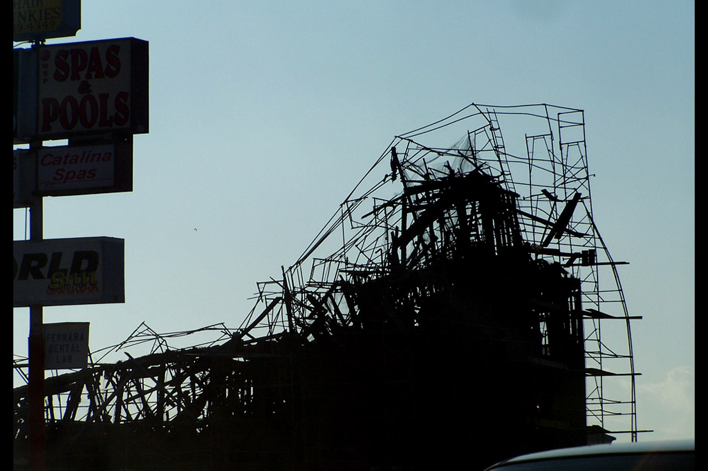

Diseño de interfaces de usuario en Android
Alberto Mateos Checa
28 Mayo 2012, Granada
SEGUIMIENTO Y CONTACTO
Presentación: http://is.gd/tallerUIAndroid
Descarga ejemplos:http://is.gd/tallerUIAndroid_ej
rolimat@gmail.com
ÍNDICE
- Introducción
- Buenas prácticas
- Layouts y componentes
- Estilos
- Patrones de diseño
1. Introducción
1.1 Evolución de Android: hardware
Dispositivos heterogéneos: pantallas, teclados ...
Tendencia:
pantallas más grandes y más resolución.
mayor potencial
1.1 Evolución de Android: UI
Grandes mejoras a partir de versiones 3 y 4
Tendencia:
diseño más claro y estilizado
mejor usabilidad
1.2 Directorios
RES: contiene los recursos y definiciones en XML
- Imágenes
- Iconos
- Cadenas de texto
- Estilos/Temas
- Colores
- ...
1.3 Definiciones XML
→ permiten definir recursos y layouts
Características:
- Alternativa a la programación en Java para UI
- Facilitan el diseño de la UI
- Visualización más agradable y "humana"
- Mejoran la organización de los recursos del proyecto
- NO proporcionan arquitectura MVC
Acceso a XML desde clases Java → R y android.R
2. Buenas prácticas
2.1 Pantallas y resoluciones
- Múltiples tamaños, resoluciones y densidades
- Problema: diferentes configuraciones, una sola aplicación
2.1 Pantallas y resoluciones
Solución diferentes TAMAÑOS:
2.1 Pantallas y resoluciones
Solución diferentes DENSIDADES:
2.1 Pantallas y resoluciones
Solución diferentes DENSIDADES:
- Comenzar el diseño para una pantalla tipo mdpi
- Adaptar los recursos a otras densidades: drawable-xhdpi, drawable-hdpi, drawable-ldpi ...
- Uso de imágenes tipo Nine-Patch
2.2 Imágenes Nine-Patch
→ imágenes extensibles que se 'autoadaptan' a la forma de la vista SIN pixelarse
Características
- Definición de la forma: borde 1px
- Definición de área extensible: línea negra 1px arriba e izquierda
- Definición de área padding (opcional): línea negra 1px abajo y derecha
- Se guardan en formato 9.png
- Herramienta Android: /tools/draw9patch
2.3 Tamaño de elementos
ALTURA = 48dp ~ 9mm: rango confortable para pantallas táctiles → [7mm,10mm]
- Independientemente de la pantalla nos aseguramos que un elemento de la pantalla NO será NUNCA < 7mm
- Compromiso entre densidad de información y facilidad para tocar elementos
DISTANCIA ENTRE ELEMENTOS = 8dp
2.3 Tamaño de elementos
Definir tamaños en res/values/dimens.xml
<?xml version="1.0" encoding="utf-8"?>
<resources>
<dimen name="altura">48dp</dimen>
<dimen name="margen_lateral">16dp</dimen>
<dimen name="distancia_elementos">8dp</dimen>
</resources>
2.4 Iconos
→ LAUNCHER: 48x48 dp
- Características: Silueta 3D y visible en cualquier tipo de fondo
→ ACTION BAR: 32x32 dp (24x24 interior)
- Características: Planos y sin detalles. Curvas suaves. Rotar icono si es alargado
- Color (tema Holo): #333 ó #FFF (según fondo) y opacidades según habilitado o no (60% ó 80% - 30%)
→ CONTEXTUALES: 16x16 dp (12x12 interior)
- Características: Planos y simples. Descriptivos. Mejor formas rellenas que líneas delgadas. Uso de colores
→ NOTIFICACIONES: 24x24 dp (22x22 interior)
- Características: Misma forma que para 'launcher' pero plano. Color BLANCO
UTILIDAD: Asset Studio
Consejo: utilizar compresores PNG
2.5 Colores
- Colores primarios → facilitan el énfasis
- Elegir colores que contrasten visualmente
- Cuidado con usuarios con problemas de visión → Color Oracle
Definir colores en res/values/colors.xml
<?xml version="1.0" encoding="utf-8"?>
<resources>
<color name="blanco">#FFFFFF</color>
<color name="azul">#0000FF</color>
<color name="verde">#00FF00</color>
<color name="rojo">#FF0000</color>
</resources>
3. Layouts y Views

3.1. Layouts
→ Establecen la forma de posicionamiento de los elementos de la pantalla
Se definen mediante Java y XML (res/layout/milayout.xml)
<?xml version="1.0" encoding="utf-8"?>
<LinearLayout
xmlns:android="http://schemas.android.com/apk/res/android"
android:layout_width="fill_parent"
android:layout_height="fill_parent"
android:orientation="vertical" >
</LinearLayout>
En la Activity se establece el layout a utilizar:
setContentView(R.layout.milayout);
3.1. Layouts
→ Tipos más comunes:
CUIDADO: no utilizar NUNCA AbsolutLayout
3.2. Views
→ Tipos más comunes:
3.3. Listeners
→ Comportamiento similar a Java
Tipos:
- onClick
- onLongClick
- onFocusChange
- onDrag
- onMenuItem
- ...
3.4. Adapters
→ Establecen una relación entre una fuente de datos externa y los elementos de una vista
Tipos:
- CursorAdapter: lectura de una base de datos
- ArrayAdapter: lectura de una array
Necesario en algunas vistas como ListView o Spinner
Existen adapters predefinidos muy básicos
4. Temas y estilos
4.1 Estilos
→ Colección de propiedades que especifican el aspecto y formato de una VISTA
Concepto similar a los estilos en diseño web
Se definen en res/values/styles.xml
<style name="estiloTitulo">
<item name="android:textStyle">bold</item>
<item name="android:layout_width">match_parent</item>
<item name="android:layout_height">wrap_content</item>
</style>
Uso:
<TextView
style="@style/estiloTitulo"
android:text="@string/textoTitulo" />
<TextView
android:layout_width="match_parent"
android:layout_height="wrap_content"
android:textStyle="bold"
android:text="@string/textoTitulo" />
4.2 Temas
→ Estilo aplicado a una ACTIVITY o APLICACIÓN
Al aplicar un tema todas las vistas harán uso de las propiedades de estilo que soporten
Se definen en res/values/themes.xml
<?xml version="1.0" encoding="utf-8"?>
<resources>
<style name="TemaNegrita">
<item name="android:textColor">@color/negro</item>
<item name="android:textStyle">bold</item>
</style>
</resources>
Uso: mediante atributos en AndroidManifest o Java
setTheme(R.style.miTema);
setContentView(R.layout.miLayout);
<application android:theme="@style/temaApp">
<activity android:theme="@style/temaActivity">
4.3 Herencia
Pueden definirse estilos/temas heredando las propiedades de un padre
Muy útil para crear estilos/temas basados en los predefinidos en Android
→ Estilos:
<style name="estiloTituloRojo" parent="@style/estiloTitulo">
<item name="android:textColor">@color/rojo</item>
</style>
→ Temas:
<style name="MiTema" parent="@android:style/Theme.Light">
<item name="android:colorBackground">@color/verde</item>
</style>
5. Patrones de diseño
5. Patrones de diseño
→ Describen una solución general a problemas para problemas típidos de diseño
- Consejos, no restricciones ni imposiciones
- Soportados a partir de la versión 3 de Android *
→ Compatibilidad versiones anteriores (2.x):
* ActionBar y Multipanel
5.1. ActionBar
→ Barra que facilita la navegación y el acceso rápido a acciones frecuentes
Espacio propio y fijo en la parte superior de la pantalla
Suele estar presente en toda la aplicación
Se autoadapta al tamaño disponible
Sustituye al menú 'tradicional'
5.1. ActionBar
→ Uso:
- Establecer targetSdkVersion = '11' en AndroidManifest
- Utilizar tema compatible con ActionBar: Theme.Holo.NoActionBar
ActionBar actionBar = getActionBar();
→ ActionItems:
@Override
public boolean onCreateOptionsMenu(Menu menu) {
MenuInflater inflater = getMenuInflater();
inflater.inflate(R.menu.main_activity, menu);
return true;
}
<menu xmlns:android="http://schemas.android.com/apk/res/android">
<item android:id="@+id/menu_save"
android:icon="@drawable/ic_menu_save"
android:title="@string/menu_save"
android:showAsAction="ifRoom|withText" />
</menu>
5.1. ActionBar
→ Navegación: Up vs Back
- Los usuarios tienen mejor memoria estructural que temporal
- back: navega hacia la pantalla anterior
- up: navega hacia arriba en la jerarquía de la aplicación
actionBar.setDisplayHomeAsUpEnabled(true);
5.1. ActionBar
→ Tabs
→ Action View
→ Action Provider (ShareActionProvider)
5.2. Dashboard
→ Pantalla entrada a la app: muestra las funciones y resalta el contenido nuevo
Pantalla completa
Sólo funciones importantes
Organización por categorías
5.3. Multipanel
→ Objetivo: aprovechar las pantallas más grandes
- Agrupa múltiples pantallas relacionadas en una única vista compuesta
- Evita las filas demasiado largas
5.3. Multipanel
→ Posibles configuraciones:
Una activity puede inflar layouts con diferentes configuraciones de fragments
Consejo: los paneles de la parte derecha deben tener el contenido o los detalles para los items que se seleccionan en los paneles de la izquierda
5.3. Multipanel
→ Fragments
Representan una porción de interfaz de usuario en una Activity
Se diseñan de igual forma que las Activities
Un mismo Fragment puede reusarse en diferentes Activities
Tienen ciclo de vida
6. Referencias
6. Referencias
http://developer.android.com
http://developer.android.com/design/
Google I/O 2010: Android UI design patterns
Google I/O 2011: designing and implementing Android UIs for phones and tablets
http://actionbarsherlock.com